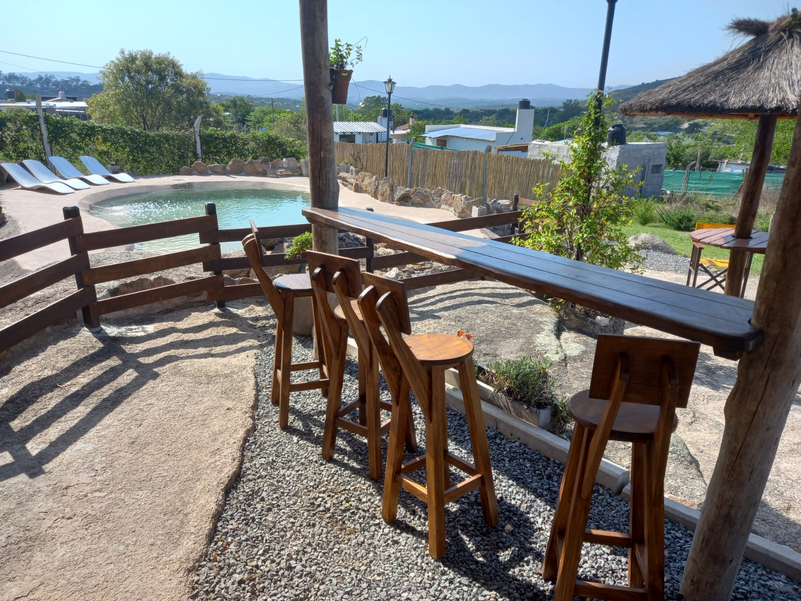
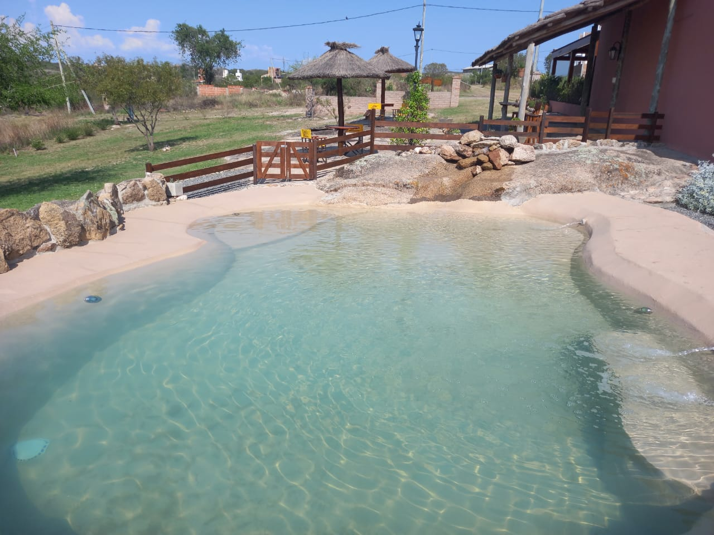
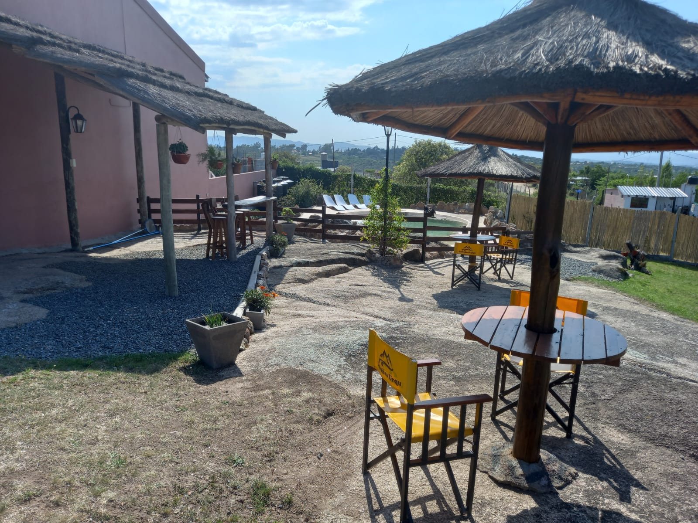
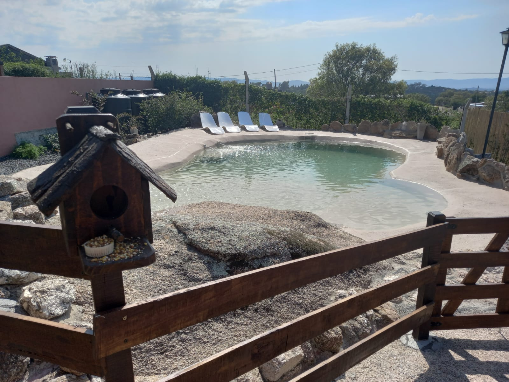

Atención cálida y familiar
Te recibimos nosotros mismos. Estamos cerca, sin invadir, para que no tengas que preocuparte por nada.

TANTI · CÓRDOBA
Un rincón de sierras, aire puro y atención familiar para volver a conectar con lo que importa.
Consultar disponibilidad ↗En Cabañas Urqu y Yaku combinamos la tranquilidad de las sierras con la cercanía a todo lo que hace especial a Tanti.
Acá no hay intermediarios: te recibimos nosotros mismos y cuidamos cada detalle para que tu estadía sea realmente tuya.
POR QUÉ ELEGIRNOS
Te recibimos nosotros mismos. Estamos cerca, sin invadir, para que no tengas que preocuparte por nada.
La paz del paisaje serrano y el acceso rápido a los atractivos de Tanti y Carlos Paz.
Un predio tranquilo, con parque, pileta y espacios pensados para descansar en familia.
Tarifa flexible de ropa blanca y traslados desde la terminal de Tanti, sin cargo.
NUESTRAS CABAÑAS
Hasta 5 personas · Habitación matrimonial · Estar equipado
 01
01CABAÑA
 02
02CABAÑA


ESPACIOS PARA DISFRUTAR
El parque, la pileta con solárium y el quincho equipado están ahí para que cada momento encuentre su lugar.
PET FRIENDLY
Nos encanta recibir a tus integrantes de cuatro patas. El entorno tranquilo de las sierras es ideal para disfrutar juntos.
Pedimos supervisión responsable dentro del predio y que nos avises al consultar disponibilidad para enviarte las normas de convivencia.
Consultar por mi mascota →.jpg)
EXPERIENCIAS REALES
“Maravillosas cabañas, más hermosas que por foto todavía. Espectacular la atención de Sandra, Orlando y Giuliana. Una familia súper amable y atenta a todo.”
“Excelente lugar para descansar y disfrutar unas lindas vacaciones, ideal para ir en familia. Todo impecable y la atención de sus dueños ni hablar.”
“Excelente el lugar y la cabaña, no le falta nada. Ideal para descansar. Súper tranquilo y 100% recomendable.”
DESCUBRÍ TANTI
Viví las sierras con una ubicación ideal para recorrer el Valle de Punilla.
Un rincón verde imperdible para conectar con la naturaleza.
Senderos y caminatas al aire libre para amantes del trekking.
Un cordón montañoso imponente de paisajes inolvidables.
Gastronomía, paseos y movimiento urbano a un paso.
PREGUNTAS FRECUENTES
El ingreso es a partir de las 12:00 hs. y la salida hasta las 10:00 hs. Consultanos por horarios especiales: podemos coordinarlos con anticipación.
Ofrecemos tarifa Confort, con sábanas, toallas y toallones, o tarifa Ahorro, para que traigas tu propia ropa blanca y accedas a un descuento.
La reserva se confirma con una seña por transferencia bancaria. El saldo restante se abona al ingresar, en efectivo o transferencia.
Sí, somos pet friendly. Aceptamos mascotas educadas y te enviamos las normas de convivencia al momento de consultar.
Sí. Te buscamos en la terminal de Tanti sin cargo para llevarte directo a tu cabaña.

RESERVAS Y CONTACTO
Escribinos y te ayudamos a planear una escapada a tu medida.
Consultar disponibilidad ↗